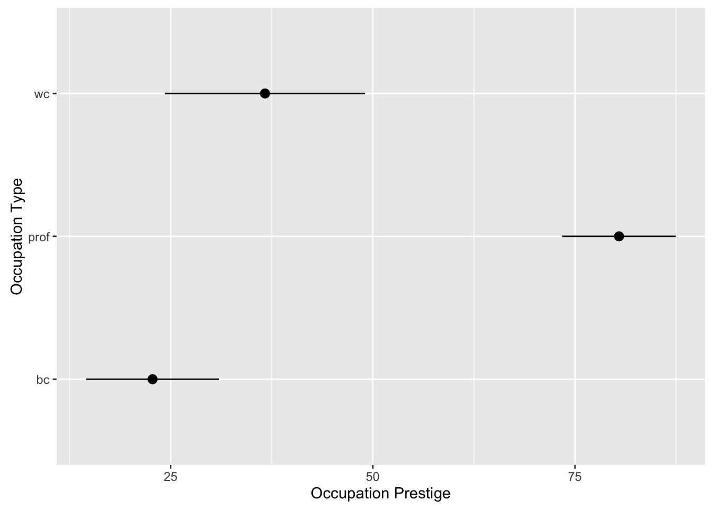

POL S/CS&SS 501, University of Washington, Winter 2016
$$ \DeclareMathOperator{\mean}{mean} \DeclareMathOperator{\var}{var} \DeclareMathOperator{\E}{E} \DeclareMathOperator{\MSE}{MSE} \DeclareMathOperator{\Bias}{Bias} \DeclareMathOperator{\SE}{se} \DeclareMathOperator{\SD}{sd} \DeclareMathOperator{\argmin}{argmin} \DeclareMathOperator{\argmax}{argmax} $$Numerical Inference in R
Jeffrey Arnold
February 10, 2016
This lesson introduces the R commands for basic numerical inference.
t.test(): One-sample mean, two-sample differenc in means, and paired difference in means confidence intervals and hypothesis testsanova(): ANOVApairwise.t.test(): Pairwise t-tests adjusting p-value for multiple comparisons
This lesson uses the following packages, although all the functions for inference (t.test(), anova(), and pairwise.t.test()) are included with R.
library("car")
library("broom")
library("dplyr")
library("ggplot2")
library("tidyr")This example will use Duncan’s occupational prestige data from the car package, which has the prestige and other characteristics of 45 U.S. occupations in 1950.
data("Duncan")
glimpse(Duncan)## Observations: 45
## Variables: 4
## $ type (fctr) prof, prof, prof, prof, prof, prof, prof, prof, wc,...
## $ income (int) 62, 72, 75, 55, 64, 21, 64, 80, 67, 72, 42, 76, 76, ...
## $ education (int) 86, 76, 92, 90, 86, 84, 93, 100, 87, 86, 74, 98, 97,...
## $ prestige (int) 82, 83, 90, 76, 90, 87, 93, 90, 52, 88, 57, 89, 97, ...This lesson will also use Student’s sleep data, included with R. This is a dataset on the effect of two different sleep medications on 10 patients that was used in Student’s 1908 paper.
data("sleep")
glimpse(sleep)## Observations: 20
## Variables: 3
## $ extra (dbl) 0.7, -1.6, -0.2, -1.2, -0.1, 3.4, 3.7, 0.8, 0.0, 2.0, 1....
## $ group (fctr) 1, 1, 1, 1, 1, 1, 1, 1, 1, 1, 2, 2, 2, 2, 2, 2, 2, 2, 2, 2
## $ ID (fctr) 1, 2, 3, 4, 5, 6, 7, 8, 9, 10, 1, 2, 3, 4, 5, 6, 7, 8, ...The variable group refers to the medication, and not a treatment/control group. In the experiment, 10 patients each took both drugs, and the increase in hours of sleep (relative to their baseline) was measured in extra.
t-test
The R function t.test() calculates both hypothesis tests and confidence intervals for one- and two-sample t-tests, and paired t-tests.
In the Duncan data, the prestige variable is the percent of raters which rate the occupation as “excellent” or “good”. The average prestige score is
summary(Duncan$prestige)## Min. 1st Qu. Median Mean 3rd Qu. Max.
## 3.00 16.00 41.00 47.69 81.00 97.00Now analyze the mean of prestige using t.test(),
t.test(Duncan$prestige)##
## One Sample t-test
##
## data: Duncan$prestige
## t = 10.152, df = 44, p-value = 4.181e-13
## alternative hypothesis: true mean is not equal to 0
## 95 percent confidence interval:
## 38.22214 57.15564
## sample estimates:
## mean of x
## 47.68889By default t.test() runs a two-sided hypothesis test where \(H_0: \mu = 0\) and \(H_a: \mu \neq 0\), and calculates a 95% confidence interval.
To calculate a different hypothesis test, use the options mu (to change the null hypothesis parameter value), and alternative to choose a one-sided (“less”, “greater”) instead of a two-sided test. This runs a two-sided test where \(H_0: \mu = 50\),
t.test(Duncan$prestige, mu = 50)##
## One Sample t-test
##
## data: Duncan$prestige
## t = -0.49201, df = 44, p-value = 0.6252
## alternative hypothesis: true mean is not equal to 50
## 95 percent confidence interval:
## 38.22214 57.15564
## sample estimates:
## mean of x
## 47.68889This runs a one-sided test where \(H_0: \mu = 50\) and \(H_a: \mu < 50\),
t.test(Duncan$prestige, mu = 50, alternative = "less")##
## One Sample t-test
##
## data: Duncan$prestige
## t = -0.49201, df = 44, p-value = 0.3126
## alternative hypothesis: true mean is less than 50
## 95 percent confidence interval:
## -Inf 55.5814
## sample estimates:
## mean of x
## 47.68889This runs a one-sided test where \(H_0: \mu = 45\) and \(H_a: \mu > 45\),
t.test(Duncan$prestige, mu = 45, alternative = "greater")##
## One Sample t-test
##
## data: Duncan$prestige
## t = 0.57243, df = 44, p-value = 0.285
## alternative hypothesis: true mean is greater than 45
## 95 percent confidence interval:
## 39.79637 Inf
## sample estimates:
## mean of x
## 47.68889By default t.test() calculates a 95% confidence interval. To change the confidence level, use the conf.level argument. This calculates a 99% confidence interval,
t.test(Duncan$prestige, conf.level = 0.99)##
## One Sample t-test
##
## data: Duncan$prestige
## t = 10.152, df = 44, p-value = 4.181e-13
## alternative hypothesis: true mean is not equal to 0
## 99 percent confidence interval:
## 35.04250 60.33528
## sample estimates:
## mean of x
## 47.68889and this calculates a 90% confidence interval,
t.test(Duncan$prestige, conf.level = 0.90)##
## One Sample t-test
##
## data: Duncan$prestige
## t = 10.152, df = 44, p-value = 4.181e-13
## alternative hypothesis: true mean is not equal to 0
## 90 percent confidence interval:
## 39.79637 55.58140
## sample estimates:
## mean of x
## 47.68889Instead of printing the results of t.test() to a console, they can be saved to a variable and used for later computations.
prestige_ttest <- t.test(Duncan$prestige, mu = 50)This object can be printed to the console,
prestige_ttest##
## One Sample t-test
##
## data: Duncan$prestige
## t = -0.49201, df = 44, p-value = 0.6252
## alternative hypothesis: true mean is not equal to 50
## 95 percent confidence interval:
## 38.22214 57.15564
## sample estimates:
## mean of x
## 47.68889However, it can also be used in computations. The p-value can be extracted using $,
prestige_ttest$p.value## [1] 0.625158To extract the confidence interval,
prestige_ttest$conf.int## [1] 38.22214 57.15564
## attr(,"conf.level")
## [1] 0.95and the test statistic,
prestige_ttest$statistic## t
## -0.4920102The full set of elements that can be extracted from the results of t.test() can be listed with names(),
names(prestige_ttest)## [1] "statistic" "parameter" "p.value" "conf.int" "estimate"
## [6] "null.value" "alternative" "method" "data.name"See the documantation of t.test() for what they do.
The broom package provides another interface to the results of t.test() (and many other statistics models). The function tidy() from this package will return a data frame from the results of t.test(),
tidy(prestige_ttest)## estimate statistic p.value parameter conf.low conf.high
## 1 47.68889 -0.4920102 0.625158 44 38.22214 57.15564While the data frame returned by tidy() will not be as detailed as the original object generated by a statistical model, as a data frame, it can be much more convenient to work with in some contexts (see the example below).
In addition to one-sample t-tests, t.test() also can estimate two-sample (difference in means) tests and confidence intervals. To compare the mean prestige of blue-collar (“bc”) and professional (“prof”) occupations,
t.test(filter(Duncan, type == "bc")$prestige,
filter(Duncan, type == "prof")$prestige)##
## Welch Two Sample t-test
##
## data: filter(Duncan, type == "bc")$prestige and filter(Duncan, type == "prof")$prestige
## t = -11.189, df = 36.72, p-value = 2.18e-13
## alternative hypothesis: true difference in means is not equal to 0
## 95 percent confidence interval:
## -68.13086 -47.23422
## sample estimates:
## mean of x mean of y
## 22.76190 80.44444Now t.test() has two arguments; the first two vectors are the values in the two samples. You can also use a formula notation with t.test. This does the same thing as the previous code,
t.test(prestige ~ type, data = filter(Duncan, type %in% c("prof", "bc")))##
## Welch Two Sample t-test
##
## data: prestige by type
## t = -11.189, df = 36.72, p-value = 2.18e-13
## alternative hypothesis: true difference in means is not equal to 0
## 95 percent confidence interval:
## -68.13086 -47.23422
## sample estimates:
## mean in group bc mean in group prof
## 22.76190 80.44444In the expression prestige ~ type, the left-hand side indicates the numeric vector (prestige) and the right-hand side variable indicates the variable containing the categories (type). The argument data indicates where to look for the prestige and type variables. In this test, the Duncan data is filtered to only include the observations with categories “prof” and “bc” since those are the only observations used in calculating the difference in means. If you try to run t.test() with a grouping factor with more than two levels, it will throw an error,
t.test(prestige ~ type, data = Duncan)## Error in t.test.formula(prestige ~ type, data = Duncan): grouping factor must have exactly 2 levelsNow, suppose we wanted to use t.test() to find a 95% confidence interval of the mean of occupational prestige for each category of occpuational type (blue-collar, white-collar, and professional). One way to do this would be to run each test separately,
t.test(filter(Duncan, type == "bc")$prestige)##
## One Sample t-test
##
## data: filter(Duncan, type == "bc")$prestige
## t = 5.7772, df = 20, p-value = 1.185e-05
## alternative hypothesis: true mean is not equal to 0
## 95 percent confidence interval:
## 14.54327 30.98054
## sample estimates:
## mean of x
## 22.7619t.test(filter(Duncan, type == "wc")$prestige)##
## One Sample t-test
##
## data: filter(Duncan, type == "wc")$prestige
## t = 7.6162, df = 5, p-value = 0.0006203
## alternative hypothesis: true mean is not equal to 0
## 95 percent confidence interval:
## 24.29104 49.04230
## sample estimates:
## mean of x
## 36.66667t.test(filter(Duncan, type == "prof")$prestige)##
## One Sample t-test
##
## data: filter(Duncan, type == "prof")$prestige
## t = 24.196, df = 17, p-value = 1.304e-14
## alternative hypothesis: true mean is not equal to 0
## 95 percent confidence interval:
## 73.42991 87.45898
## sample estimates:
## mean of x
## 80.44444This code could be simplified by using a for loop,
types <- c("bc", "wc", "prof")
for (typ in types) {
print(t.test(filter(Duncan, type == typ)$prestige))
}##
## One Sample t-test
##
## data: filter(Duncan, type == typ)$prestige
## t = 5.7772, df = 20, p-value = 1.185e-05
## alternative hypothesis: true mean is not equal to 0
## 95 percent confidence interval:
## 14.54327 30.98054
## sample estimates:
## mean of x
## 22.7619
##
##
## One Sample t-test
##
## data: filter(Duncan, type == typ)$prestige
## t = 7.6162, df = 5, p-value = 0.0006203
## alternative hypothesis: true mean is not equal to 0
## 95 percent confidence interval:
## 24.29104 49.04230
## sample estimates:
## mean of x
## 36.66667
##
##
## One Sample t-test
##
## data: filter(Duncan, type == typ)$prestige
## t = 24.196, df = 17, p-value = 1.304e-14
## alternative hypothesis: true mean is not equal to 0
## 95 percent confidence interval:
## 73.42991 87.45898
## sample estimates:
## mean of x
## 80.44444Note that in a for loop you need to explicitly specify print(). However, if we wanted to put the results of these tests in a table or plots, or otherwise use them in future computations, we still would have to do extra processing to extract values from each test and save them to other variables.
Using dplyr and broom can simplify that task. The following code runs t.test() on each category of type, converts the results of the t-test to a data frame using tidy. This areturns a data frame with a row for each catgory of type, and columns with results from the t-tests,
duncan_t_tests <-
Duncan %>%
group_by(type) %>%
do(tidy(t.test(.$prestige)))
duncan_t_tests## Source: local data frame [3 x 7]
## Groups: type [3]
##
## type estimate statistic p.value parameter conf.low conf.high
## (fctr) (dbl) (dbl) (dbl) (dbl) (dbl) (dbl)
## 1 bc 22.76190 5.777179 1.184777e-05 20 14.54327 30.98054
## 2 prof 80.44444 24.195881 1.304462e-14 17 73.42991 87.45898
## 3 wc 36.66667 7.616151 6.202639e-04 5 24.29104 49.04230This can be used to plot the confidence intervals,
ggplot(duncan_t_tests, aes(x = type,
y = estimate,
ymin = conf.low,
ymax = conf.high)) +
geom_pointrange() +
coord_flip() +
xlab("Occupation Type") +
ylab("Occupation Prestige") or p-values
ggplot(duncan_t_tests, aes(x = type,
y = p.value)) +
geom_point() +
coord_flip() +
ylab("p-value") +
xlab("Occupation Type")Now, consider the sleep data. Since it has the extra hours of sleep for the same set of 10 patients for two drugs, this is paired data, and should be analyzed using a paired t-test. Although the data is paired, t.test() does not know this and will run a two-sample difference in means test by default,
t.test(extra ~ group, data = sleep)##
## Welch Two Sample t-test
##
## data: extra by group
## t = -1.8608, df = 17.776, p-value = 0.07939
## alternative hypothesis: true difference in means is not equal to 0
## 95 percent confidence interval:
## -3.3654832 0.2054832
## sample estimates:
## mean in group 1 mean in group 2
## 0.75 2.33The appropriate, paired t-test is,
t.test(extra ~ group, data = sleep, paired = TRUE)##
## Paired t-test
##
## data: extra by group
## t = -4.0621, df = 9, p-value = 0.002833
## alternative hypothesis: true difference in means is not equal to 0
## 95 percent confidence interval:
## -2.4598858 -0.7001142
## sample estimates:
## mean of the differences
## -1.58This could also be done manually. Create a wide data frame in which med1 and med2 are columns with the extra hours of sleep for each drug, for each patient. Then create a column diff which is the difference in the extra hours of sleep for each drug.
sleep_wide <-
sleep %>%
mutate(group = paste("med", group, sep = "")) %>%
spread(group, extra) %>%
mutate(diff = med1 - med2)
glimpse(sleep_wide)## Observations: 10
## Variables: 4
## $ ID (fctr) 1, 2, 3, 4, 5, 6, 7, 8, 9, 10
## $ med1 (dbl) 0.7, -1.6, -0.2, -1.2, -0.1, 3.4, 3.7, 0.8, 0.0, 2.0
## $ med2 (dbl) 1.9, 0.8, 1.1, 0.1, -0.1, 4.4, 5.5, 1.6, 4.6, 3.4
## $ diff (dbl) -1.2, -2.4, -1.3, -1.3, 0.0, -1.0, -1.8, -0.8, -4.6, -1.4Running a one-sample t-test on the difference in the extra hours of sleep for each patience gives the same results as using paired = TRUE on the original data,
t.test(sleep_wide$diff)##
## One Sample t-test
##
## data: sleep_wide$diff
## t = -4.0621, df = 9, p-value = 0.002833
## alternative hypothesis: true mean is not equal to 0
## 95 percent confidence interval:
## -2.4598858 -0.7001142
## sample estimates:
## mean of x
## -1.58TODO: Examples using data from OpenIntro Numeric Inference Lab.
ANOVA
One way to run a one-way ANOVA is to run a linear regression in R using lm() with a single categorical explanatory variable, and then apply anova() to the result.
duncan_type_anova <- anova(lm(prestige ~ type, data = Duncan))
duncan_type_anova## Analysis of Variance Table
##
## Response: prestige
## Df Sum Sq Mean Sq F value Pr(>F)
## type 2 33090 16545.0 65.571 1.207e-13 ***
## Residuals 42 10598 252.3
## ---
## Signif. codes: 0 '***' 0.001 '**' 0.01 '*' 0.05 '.' 0.1 ' ' 1In R, the use of ~ is known as the formula notation. It can have slightly different meanings in different functions, but in lm(), the left-hand variable is the outcome variable, and the right-hand side variable(s) is (are) the explanatory variable(s).
Pairwise t-tests
The function pairwise.t.test does what it says; it runs pairwise t-tests. The first argument is a numeric vector; the second argument is the vector with categories. The argument p.adjust.method allows the user to choose a method to adjust the p-values for multiple comparison.
The Bonferroni correction adjusts the p-values so that the adjusted p-value is `{alpha} = / m$, where \(m\) is the number of tests.
pairwise.t.test(Duncan$prestige, Duncan$type)##
## Pairwise comparisons using t tests with pooled SD
##
## data: Duncan$prestige and Duncan$type
##
## bc prof
## prof 7.6e-14 -
## wc 0.066 1.3e-06
##
## P value adjustment method: holmpairwise.t.test(Duncan$prestige, Duncan$type, p.adjust.method = "bonferroni")##
## Pairwise comparisons using t tests with pooled SD
##
## data: Duncan$prestige and Duncan$type
##
## bc prof
## prof 7.6e-14 -
## wc 0.2 2.0e-06
##
## P value adjustment method: bonferronipairwise.t.test(Duncan$prestige, Duncan$type, p.adjust.method = "BH")##
## Pairwise comparisons using t tests with pooled SD
##
## data: Duncan$prestige and Duncan$type
##
## bc prof
## prof 7.6e-14 -
## wc 0.066 9.9e-07
##
## P value adjustment method: BHThe broom package has some support for pairwise.t.test, and will put
pw_ttest_Duncan_type <- pairwise.t.test(Duncan$prestige, Duncan$type)
tidy(pw_ttest_Duncan_type)## group1 group2 p.value
## 1 prof bc 7.629128e-14
## 2 wc bc 6.553738e-02
## 4 wc prof 1.321457e-06Note: Pairwise t-tests are different than paired t-tests. In a paired t-test there are two populations which are not independent, in which each observation in one sample can be matched to another observation in the other sample. An example of this would be a before-after study. Pairwise t-tests are used to compare each pair of \(K \geq 2\) samples, for a total of \(K (K + 1) / 2\) difference in means t-tests. Since there are multiple t-tests, the p-values of pairwise t-tests need to be corrected for multiple testing.

This work is licensed under a Creative Commons Attribution-NonCommercial-ShareAlike 4.0 International License. R code is licensed under a BSD 2-clause license.